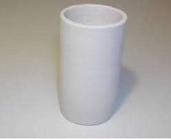

Quando si ha a che fare con l'elettrochimica prima o poi non si scappa: si ha il problema del "vaso poroso"!
E' un elemento indispensabile quando le soluzioni in gioco sono due (come spesso accade), le quali non devono mescolarsi ma deve essere consentito uno scambio ionico tra di esse.
L'esempio classico sono le pile Daniell, Bunsen o Leclanchè, dove i due metalli sono nella rispettiva semicella separati appunto da un introvabile "vaso poroso".
Anch'io non sapevo mai come risolvere questo problema... fino a ieri, quando sono riuscito inaspettatamente a farmi fare da un artigiano della ceramica il cilindretto che si vede in foto.
Ha un diametro di 35 mm ed è alto il doppio e naturalmente è cotto ad un migliaio di gradi ma senza lo smalto che lo renderebbe lucido e impermeabile.
Riempito d'acqua, dopo un po' lo si sente leggermente "sudare" all'esterno.
Finalmente potrò tentare un esperimento di elettrochimica al quale pensavo da tempo e qualcos'altro che mi verrà in mente.

Ecco un problema che sembrava del tutto irrisolubile e che si è invece felicemente concluso!